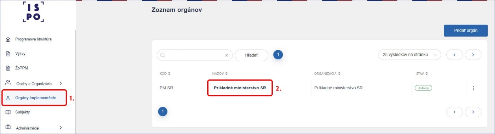
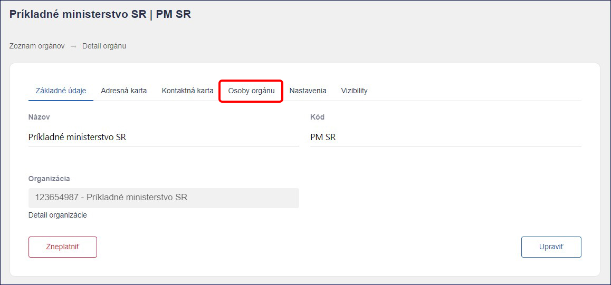
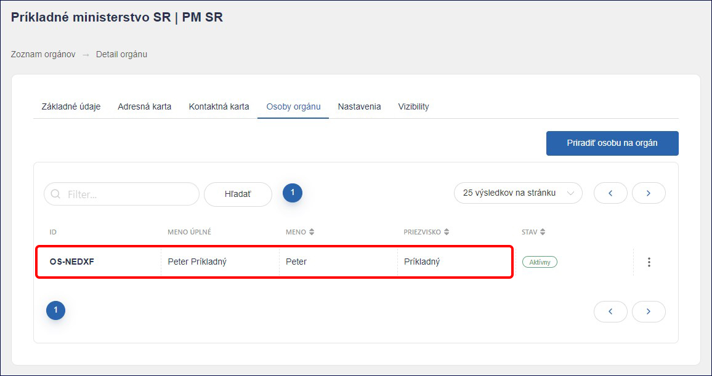
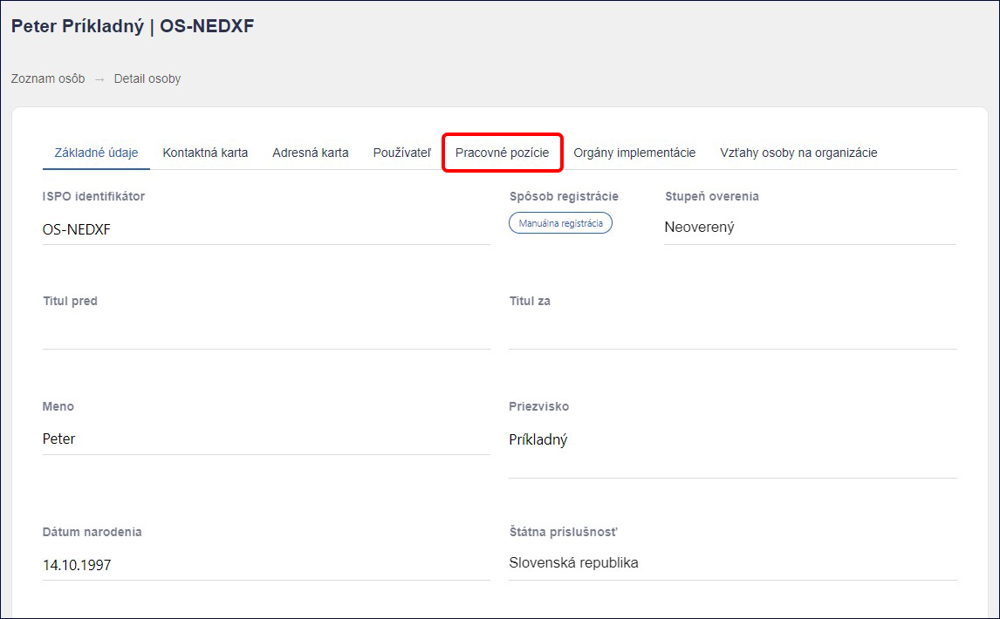
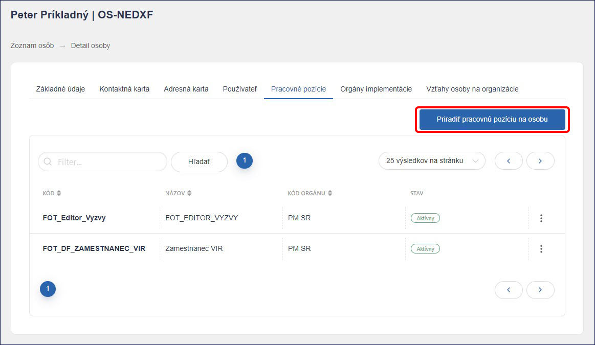
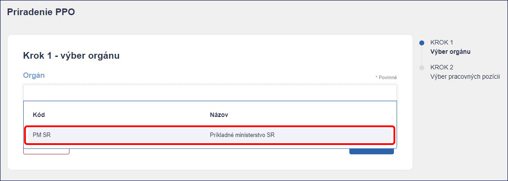
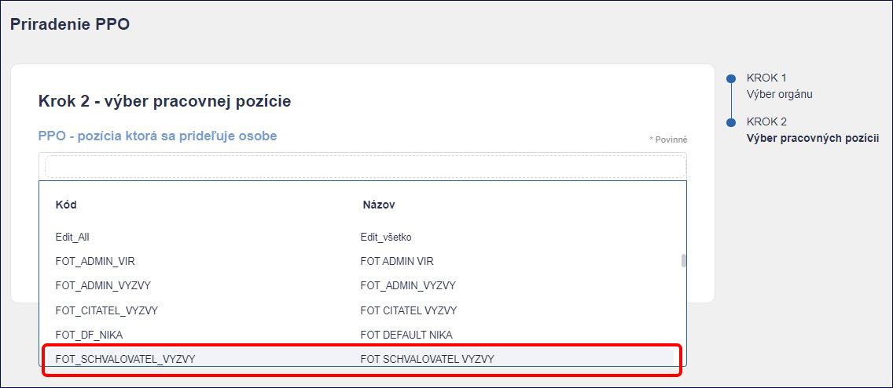
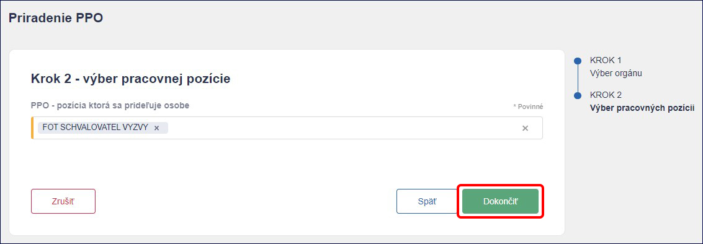
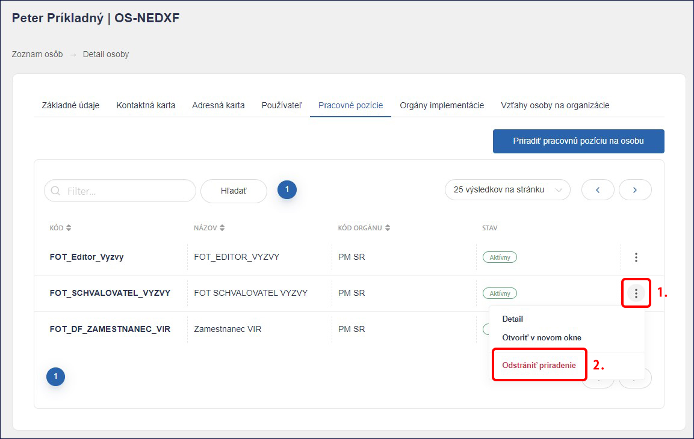

2. Pracovné pozície
Administrácia výziev a žiadostí v ISPO si vyžaduje priradenie viacerých pracovných pozícií. Pracovné pozície prideľuje administrátor vykonávateľa Admin VIR ostatným zamestnancom registrovaným na neverejnú časť ISPO na základe interných potrieb vykonávateľa.
Aktuálne dostupné pracovné pozície v ISPO sú nasledovné:
1) Čitateľ výzvy - pracovná pozícia umožňuje nahliadnutie do výzvy, bez možnosti editácie.
2) Editor výzvy - pracovná pozícia umožňuje vytvoriť a editovať výzvu. Danú pracovnú pozíciu odporúčame priradiť zamestnancovi, ktorý sa podieľa na príprave, vytvorení a editácii výzvy.
Pozn. Pracovnú pozíciu „Editor výzvy“ odporúčame nepriraďovať osobe spolu s pracovnou \ pozíciou „Schvaľovateľ výzvy“ z dôvodu zachovania princípu kontroly štyroch očí.
3) Schvaľovateľ výzvy - pracovná pozícia umožňuje odoslanie výzvy na posúdenie NIKA (bez možnosti editácie výzvy). Danú pracovnú pozíciu odporúčame priradiť zamestnancovi, ktorý bude kontrolovať výzvu a následne ju odošle na posúdenie NIKA. Zároveň, ak NIKA vydá stanovisko “Na doplnenie”, Schvaľovateľ výzvy musí toto stanovisko najprv pomocou modrého tlačidla „Prevziať“, až následne môže Editor výzvy pokračovať v úprave.
Pozn. Pracovnú pozíciu „Schvaľovateľ výzvy“ odporúčame nepriraďovať osobe spolu s pracovnou pozíciou „Editor výzvy“ z dôvodu zachovania princípu kontroly štyroch očí.
4) Administrátor výzvy - pracovná pozícia umožňuje zverejnenie, pozastavenie, uzatvorenie a zrušenie výzvy (bez možnosti editácie výzvy). Danú pracovnú pozíciu odporúčame priradiť zamestnancovi, ktorý bude výzvu zverejňovať po stanovisku NIKA.
5) Čitateľ ŽoPPM - pracovná pozícia umožňuje prácu so žiadosťami o poskytnutie prostriedkov mechanizmu. Vďaka nej môžeme vidieť zoznam prijatých ŽoPPM, stiahnuť zjednodušený sumár žiadosti, stiahnuť kompletnú žiadosť aj s prílohami.
6) Editor registratúrneho záznamu - pracovná pozícia umožňuje evidenciu prijatých sumárov ŽoPPM v ISPO, tzn. doplnenie čísla registratúrneho záznamu z registratúrneho systému VIR, čísla spisu, dátumu prijatia žiadosti v registratúre a dodatočnej referencie (v prípade potreby).
7) Spracovateľ dát – pracovná pozícia, ktorá pomocou funkcie Datamart umožňuje prácu s údajmi o výzvach a žiadostiach vykonávateľa. Na základe tohto oprávnenia je užívateľ neverejnej časti oprávnený zobraziť si údaje v štruktúrovanej forme a zrealizovať export údajov z ISPO (vo formátoch html, csv, excel, obázok, pdf).
8) Monitorovací manažér VIR – pracovná pozícia umožňuje funkciu Vkladania údajov, v ktorej dokážeme pridávať monitorovacie údaje do systému ISPO a zároveň ich editovať. Pomocou funkcie Reporting dokážeme monitorovacie údaje exportovať.
Pozn. Pracovná pozícia „Spracovateľ dát“ a „Monitorovací manažér“ umožňuje zobrazenie rodného čísla žiadateľa. Z tohto dôvodu odporúčame priradiť danú pozíciu zamestnancovi, ktorý je oprávnený pracovať so žiadosťami, resp. osobnými údajmi žiadateľov.
9) Priraďovateľ ŽOP - pracovná pozícia umožňuje aktiváciu prijímania ŽoP cez Portál ISPO, nastavenie administrácie ŽoP a pridelenie používateľov k posudzovaniu ŽoP.
10) Editor registratúrneho záznamu ŽOP - pracovná pozícia umožňuje evidenciu prijatých žiadostí o platbu v ISPO, tzn. doplnenie čísla registratúrneho záznamu z registratúrneho systému VIR, čísla spisu, dátumu prijatia žiadosti v registratúre a dodatočnej referencie (v prípade potreby).
11) Kontrolór úplnosti ŽOP - pracovná pozícia umožňuje skontrolovať žiadosť o platbu, na ktorú bol používateľ priradený ako kontrolór úplnosti. Zároveň umožňuje vykonať priame doplnenie ŽoP alebo vyžiadať doplnenie žiadosti o platbu od žiadateľa.
12) Administratívny finančný kontrolór ŽOP - pracovná pozícia umožňuje skontrolovať žiadosť o platbu, na ktorú bol používateľ priradený ako finančný kontrolór na mieste a administratívny finančný kontrolór. Zároveň umožňuje vykonať priame doplnenie ŽoP alebo vyžiadať doplnenie od žiadateľa. Následne umožňuje žiadosť zamietnuť, schváliť, schváliť čiastočne alebo schváliť so zníženou sumou.
13) Schvaľovateľ doplnenia ŽOP – pracovná pozícia umožňuje schváliť odoslanie výzvy na doplnenie ŽoP a následne schváliť zapracovanie doplnenia ŽoP.
14) Editor Projektu a ŽOP - pracovná pozícia umožňuje vytvárať a editovať evidenčný projekt, internú žiadosť o platbu a internú monitorovaciu správu. Zároveň umožňuje editáciu projektov z priameho vyzvania.
15) Priraďovateľ ŽoPPM - pracovná pozícia umožňuje priraďovať používateľov s pracovnou pozíciou posudzovateľ, hodnotiteľ, arbiter a zazmluvniteľ na konkrétnu ŽoPPM.
16) Posudzovateľ ŽoPPM - pracovná pozícia umožňuje náhľad detailu celej ŽoPPM vrátane príloh. Zároveň umožňuje zaevidovať úvodnú kontrolu ŽoPPM, nahrať kontrolný zoznam, vyhodnotiť referenčné registre, pozrieť si stanovisko hodnotiteľov a zaevidovať výsledky posudzovania. Umožňuje tiež priame doplnenie ŽoPPM alebo vyžiadať doplnenie od žiadateľa.
17) Hodnotiteľ ŽoPPM - pracovná pozícia umožňuje náhľad detailu celej ŽoPPM vrátane príloh. Umožňuje tiež nahrať kontrolný zoznam, vyhodnotiť referenčné registre a zaevidovať výsledky hodnotenia ŽoPPM.
18) Arbiter - pracovná pozícia umožňuje náhľad detailu celej ŽoPPM vrátane príloh. Umožňuje tiež skontrolovať stanovisko všetkých hodnotiteľov a posudzovateľov, skontrolovať kontrolné zoznamy, referenčné registre. Zároveň umožňuje ŽoPPM schváliť, zamietnuť alebo vrátiť do posudzovania.
19) Zazmluvniteľ - pracovná pozícia umožňuje náhľad detailu celej ŽoPPM vrátane príloh. Zároveň umožňuje skontrolovať stanovisko všetkých hodnotiteľov, posudzovateľov a arbitra, skontrolovať kontrolné zoznamy, referenčné registre. Umožňuje tiež nahrať údaje zo zmluvy a projekt zazmluvniť.
20) Editor doplnenia ŽoPPM/Projektu - pracovná pozícia umožňuje priame doplnenie ŽoPPM/projektu alebo vyžiadať doplnenie od žiadateľa/prijímateľa a zapracovať ho.
21) Čitateľ doplnenia ŽoPPM/Projektu - pracovná pozícia umožňuje náhľad doplnenia ŽoPPM/projektu.
22) Čitateľ SPIS - pracovná pozícia umožňuje prezerať spisovú zložku konkrétneho orgánu.
23) Editor SPIS - pracovná pozícia umožňuje prezerať a nahrávať dokumenty do spisovej zložky konkrétneho orgánu.
Upozornenie! Pracovné pozície je možné vzájomne kombinovať. Za správne pridelenie pracovných pozícií na úrovni vykonávateľa zodpovedá Admin VIR.
2.1) Priradenie pracovnej pozície (návod pre Admina VIR)
Pre priraďovanie a odoberanie pracovných pozícií v ISPO potrebujeme pracovnú pozíciu Admin VIR (prideľuje Centrum podpory ISPO na základe žiadosti o registráciu, ktorá je podpísaná štatutárom daného vykonávateľa).
2.1.1) Po prihlásení do systému v ľavom paneli vyberieme sekciu Orgány implementácie a klikneme na orgán, pod ktorým sme prihlásení (vzorovo: Príkladné ministerstvo SR).

2.1.2) Zobrazí sa detail orgánu, v ktorom klikneme na záložku Osoby orgánu.

2.1.3) V zozname sa zobrazia všetky osoby priradené k danému orgánu. Vyberieme si osobu, ktorej chceme prideliť pracovnú pozíciu (vzorovo: Peter Príkladný).

2.1.4) Zobrazí sa profil danej osoby. Následne klikneme na záložku Pracovné pozície.

2.1.5) V zozname sa zobrazia aktuálne pracovné pozície priradené danej osobe. Klikneme na tlačidlo Priradiť pracovnú pozíciu na osobu.

2.1.6) Priraďovanie pracovnej pozície zahŕňa dva kroky. V prvom kroku vyberieme zo zoznamu príslušný orgán,\ pod ktorým zamestnanec pracuje. Po výbere orgánu klikneme na tlačidlo Ďalej.

2.1.7) V druhom kroku vyberieme zo zoznamu relevantnú pracovnú pozíciu, ktorá prislúcha danému zamestnancovi (vzorovo: pracovná pozícia s názvom „Schvaľovateľ výzvy“). Zamestnanec môže mať priradených viac pracovných pozícií.

2.1.8) Proces priraďovania pracovnej pozície dokončíme kliknutím na tlačidlo Dokončiť. V prípade, že sme omylom zvolili nesprávnu pracovnú pozíciu, môžeme ju pred dokončením vymazať pomocou krížika nachádzajúceho sa vedľa názvu pozície a zo zoznamu si vybrať požadovanú pracovnú pozíciu. Zo zoznamu môžeme vybrať viac pracovných pozícií naraz.

2.1.9) Po úspešnom priradení pracovnej pozície sa opäť zobrazí profil danej osoby a zároveň sa v pravom dolnom rohu zobrazí informácia „PPO úspešne priradená k osobe“. Úspešné priradenie pracovnej pozície môžeme overiť opätovným kliknutím na záložku Pracovné pozície, kde by sa mala relevantná pozícia zobraziť v stave Aktívny. Ak chceme osobe pracovnú odobrať, klikneme na tlačidlo Tri bodky vedľa pracovnej pozície a klikneme na možnosť Odstrániť priradenie.
